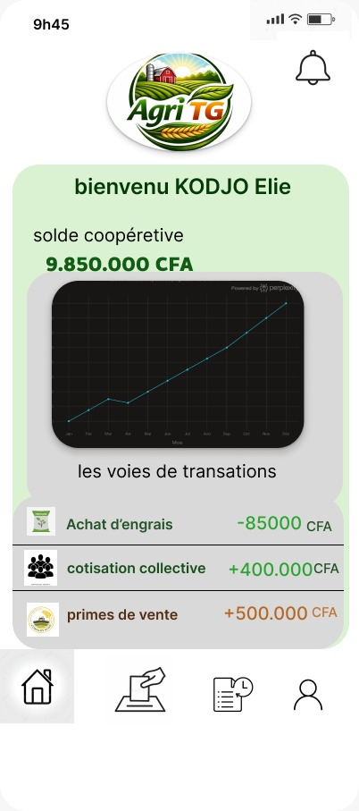
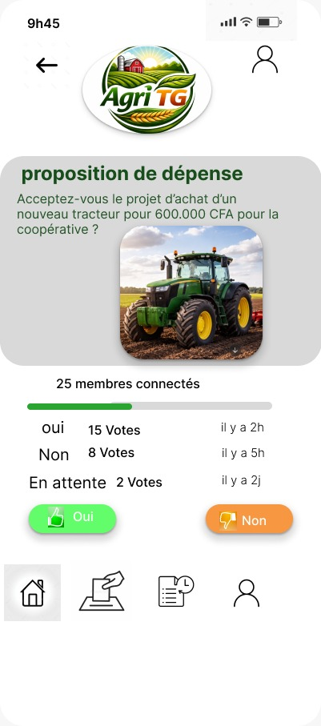
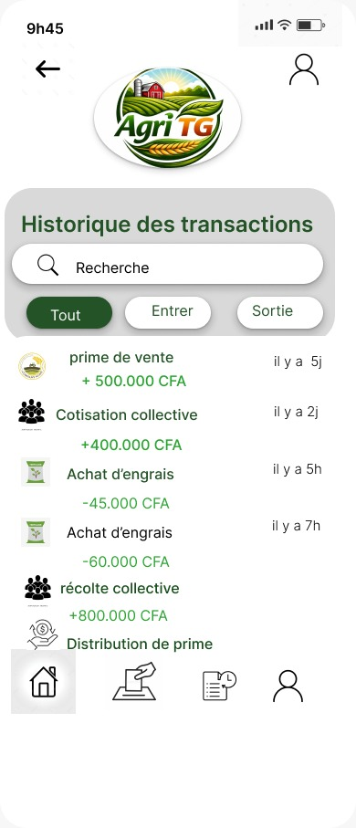

80%
Des coopératives agricoles togolaises tiennent leur comptabilité uniquement en cash et sur papier.
Une plateforme sécurisée par la blockchain pour éliminer l'opacité financière dans les coopératives agricoles au Togo.
Les pratiques comptables actuelles pénalisent lourdement les membres.
Des coopératives agricoles togolaises tiennent leur comptabilité uniquement en cash et sur papier.
Des fonds collectifs font l'objet de détournements documentés chaque année.
Des membres citent le manque de transparence comme principale raison de méfiance.
Kofi, cultivateur de maïs, a cotisé tout au long de l'année pour l'achat groupé d'engrais. Au moment de la distribution, les fonds s'avèrent insuffisants à cause de "pertes" comptables inexpliquées.
Il perd 30% de ses récoltes.
Grâce à Agri TG, Abla surveille en direct les réserves de la coopérative depuis son téléphone USSD/App. Lors du vote pour l'achat de tracteurs, son vote a compté de manière transparente.
Sa confiance attire 3 fois plus de fonds (IFAD).
Un registre inaltérable couplé à une interface d'une simplicité totale.

Consultation du solde et historique depuis un smartphone.

Décisions certifiées inviolables grâce aux Smart Contracts.

Chaque ligne correspond à un bloc irréversible (Hash).
Découvrez comment une transaction est scellée de manière permanente. Entrez un montant, et observez la création cryptographique d'un nouveau bloc.
Initialisation du registre Agri TG